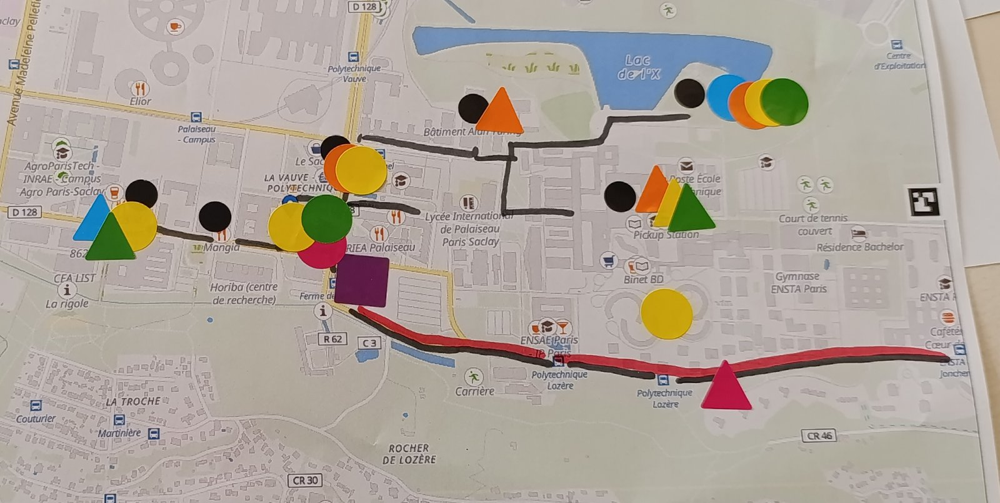
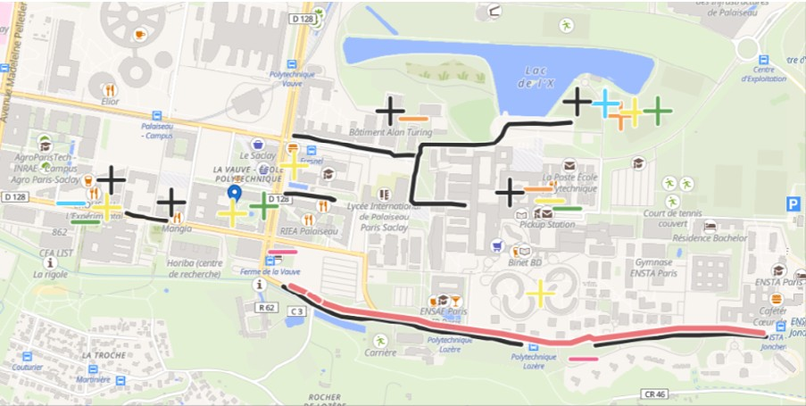

i-MOBYL
i-MOBYL is a European research project about how young adolescents (11 to 15 years old) get around their city. I built a tangible mapping tool for its workshops. Students first fill in a paper map, and then see the results of the whole group on a projected map during the same session.

Overview
i-MOBYL studies the mobility of young adolescents in five countries. In the workshops, students work on a printed map of their area. They put stickers on the places they like or dislike, draw the routes they usually take, and answer a few other questions on the map.
Paper is easy for everyone to use, but the results normally only come later, after someone has entered all the data by hand. This tool is an addition to the paper map, not a replacement. We take a photo of each finished map, and the software reads the stickers and the drawn routes from the photo.
The combined results are then projected during the same session. Students see a heatmap of the places the group liked and disliked. They can also put a paper card on the projected map to see the street view of that place, which helps them discuss it together.

